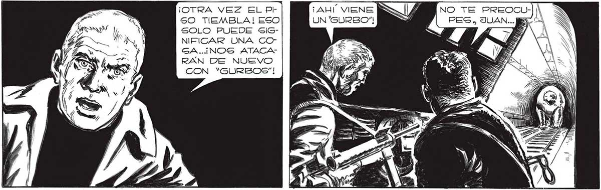
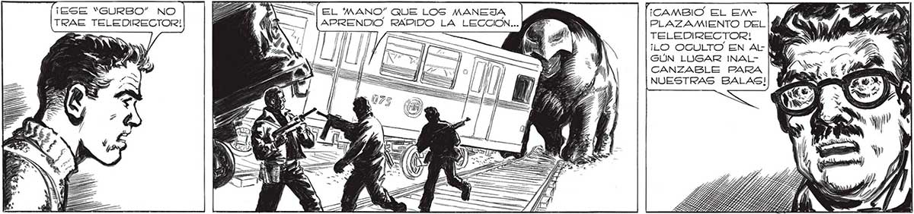
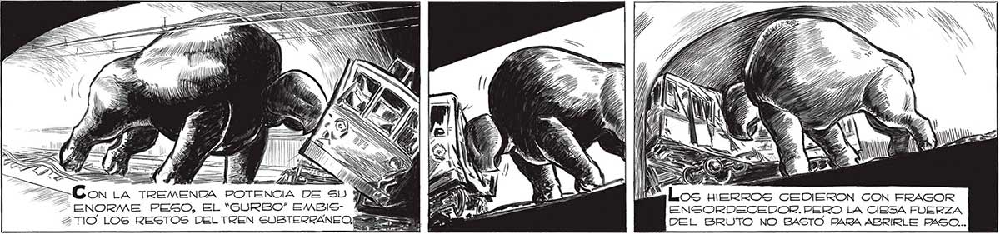

¡OTRA VEZ EL pr ¡AHÍ VIENE 50 TIEMBLA! ESO UN 'SURBO"” SOLO PUEDE SIGNIFICAR UNA CGOGA.. ¡NOS ATACARAN DE NUEVO CON “*“GURBOS"! YA SABES GUE ES BAGIL ANULAR A LOS “SURBOS"...UN BA" | LAZO EN EL TELEDIRECTOR y Y 231 ¡ESE “GURBO” NO EE ASS EL MANO” QUE LOS MANEJA ¡CAMBIO EL EMTRAE TELEDIRECTOR! á ' [APRENDIO RAPIDO LA LECCION... PLAZAMIENTO DEL , : TELEDIRECTOR! > ¡LO OGULTO EN AL- MY? GÚN LUGAR INAL- [WM CANZABLE PARA NUESTRAS BALAS! DS I ll; SN S S S Sr Y, Ey. ALE A, >> POTENCIA DE SU YA és ENORME PEGO, EL “GURBO” EMBIS- a A 2TIO' LOS RESTOS DELTREN SUBTERRANEO. (a 9 FER 3 ¿Los uerros CEDIERON CON ERAGOR ENSORDECEDOR. PERO LA CIESA FUERZA DEL BRUTO NO B4STO PARA ABRIRLE PASO... DAT


